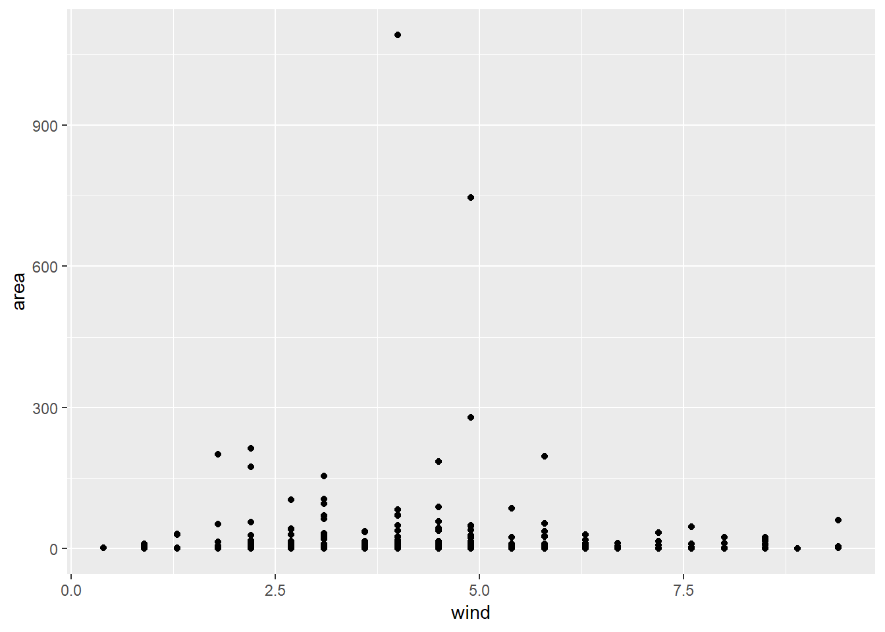

1 2. Box Plots by week day
create_box_by_day <- function(x, y) {
ggplot(ff) +
aes_string(x, y) +
geom_boxplot()
}
X_var <- c("day")
Y_var <- c("FFMC", "DMC","DC", "ISI", "temp", "RH", "wind", "rain")
map2(X_var, Y_var, create_box_by_day)## [[1]]##
## [[2]]##
## [[3]]
##
## [[4]]##
## [[5]]
##
## [[6]]##
## [[7]]
##
## [[8]]
Comment: It’s clear from looking at the solid black lines in the centers of the box plots that medians for each variable seem to be quite consistent across days of the week. The size of the boxes are also consistent across days, suggesting that the ranges of data values are similar.
The number of outlier points and the length of the box whiskers representing high and low points vary from day to day. However, there do not seem to be any patterns that suggest that the variables differ by day of the week, despite the fact that the number of forest fires appears to be higher on weekends.
Though week day plots didn’t reveal anything interesting month-wise box plots got some information which looks quite relevant and the variables which revealed such differences might be capable of explaining why there are such differences in a further investigation.
1.1 Which variables are related to forest fire severity?
1.1.0.1 How is forest fire severity measured?
In our dataset, area is the variable which helps us measure the fire severity.
create_scatter <- function(x,y){
ggplot(data = ff) +
aes_string(x,y) +
geom_point()
}
Y_scat <- c("area")
X_scat <- c("FFMC", "DMC","DC", "ISI", "temp", "RH", "wind", "rain")
map2(X_scat, Y_scat, create_scatter)## [[1]]
##
## [[2]]##
## [[3]]
##
## [[4]]##
## [[5]]##
## [[6]]
##
## [[7]]
##
## [[8]]
It seems most of the data points are in the lower part of any plots.
Let’s plot a histogram quickly:
ggplot(ff)+
aes(area) +
geom_histogram(bins = 20)
The above histogram tells that the burnt area concentration is below 500 ha per each entry in the dataset. It is also evident that most number of points are focused towards a lower area which is less than 50 ha. As most of the area points are in the lower part of the plots, let’s filter out data and plot the same scatter plots for a fewer number of data points.
area_is_zero <- ff %>%
filter(area == 0)
area_without_outliers <- ff %>%
filter(area > 0 & area < 400)
area_0_and_50 <- ff %>%
filter(area > 0 & area <= 50)1.2 Plotting area burnt between 0 ha and 50 ha
create_scatter <- function(x,y){
ggplot(data = area_0_and_50) +
aes_string(x,y) +
geom_point()
}
Y_scat <- c("area")
X_scat <- c("FFMC", "DMC","DC", "ISI", "temp", "RH", "wind", "rain")
map2(X_scat, Y_scat, create_scatter)## [[1]]##
## [[2]]##
## [[3]]
##
## [[4]]
##
## [[5]]
##
## [[6]]##
## [[7]]##
## [[8]] Comment: With no clear patterns after plotting without outliers and removing zero area values separately, plotting for the area in the range [0,50] shows
Comment: With no clear patterns after plotting without outliers and removing zero area values separately, plotting for the area in the range [0,50] shows FFMC has a positive trend with area. The plot of rain and area shows that there was no rain when any amount of area occurred, which is a trivial insight. No other variables show any noticeable relation with area.
This ends the data exploration and suggests to verify the insights derived from a statistical standpoint so that the happenings can be explained with reason.